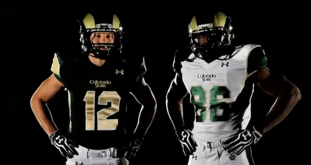
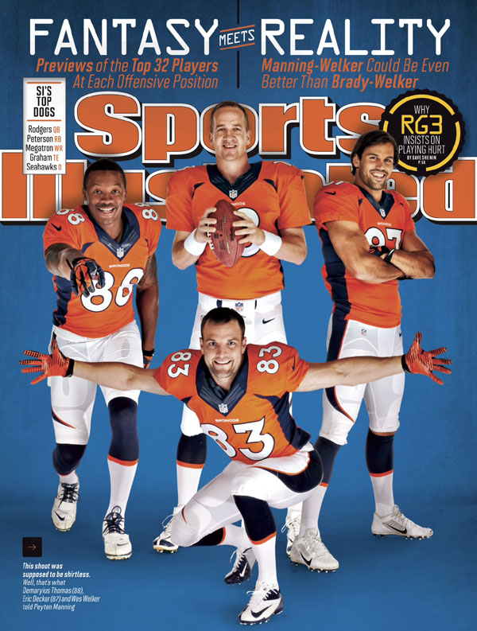
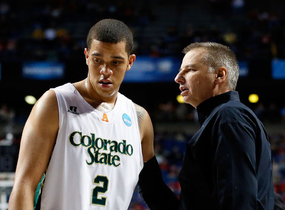
Rams New Unis
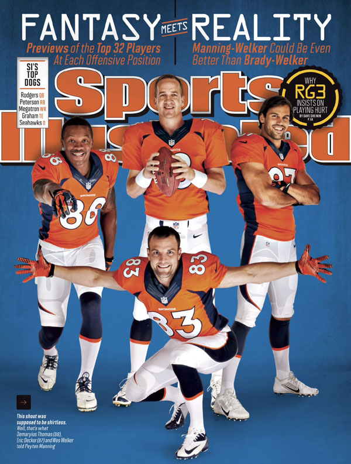
Cover Boys
No. 7, Retired Again
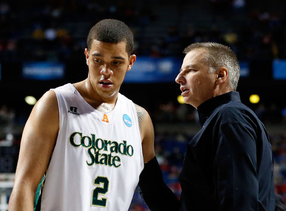
Eustachy Extended
¡Viva Los Broncos!
New Twist on H.S. Rivalries
Not a failed test
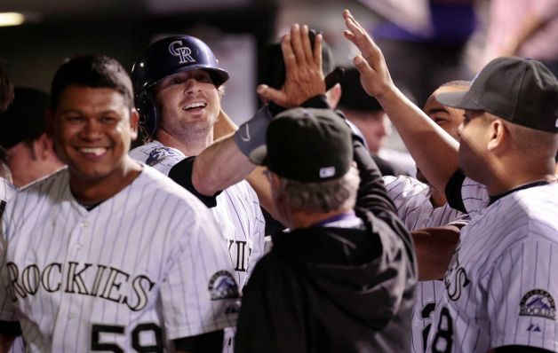
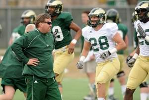
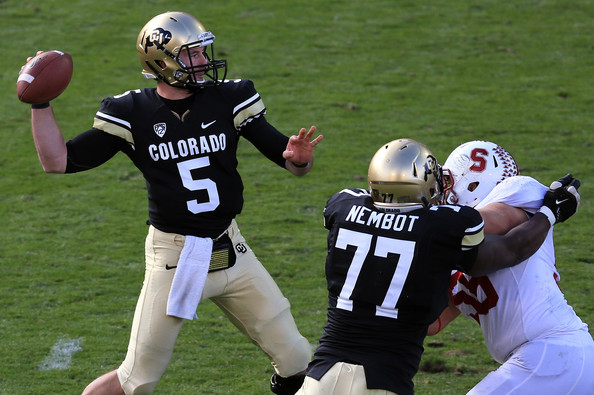
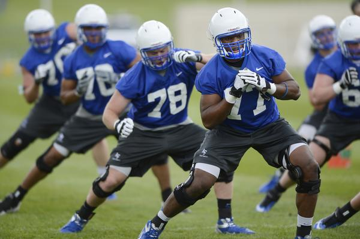
Do You Believe?
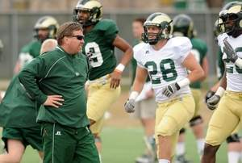
Rams In Pads
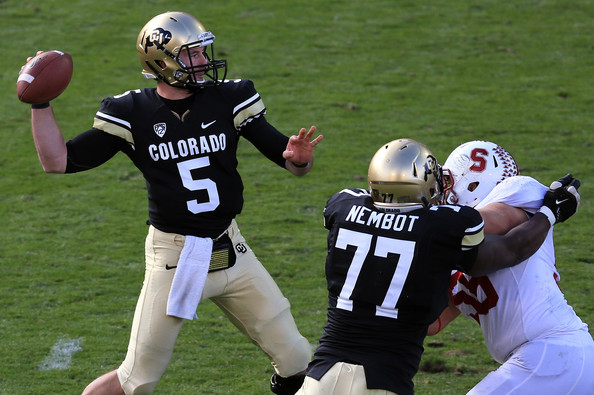
Frontrunner
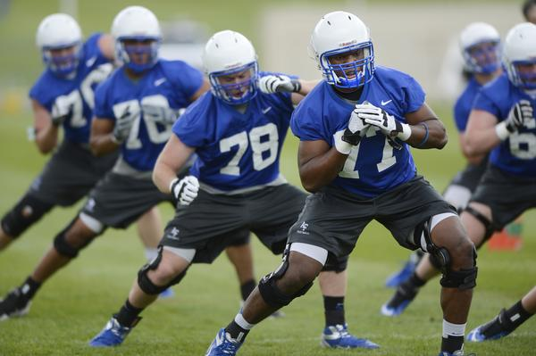
Basic Training
L.L. Cool Mannings
No PAC-12 On DTV
AVS Open The Can Oct. 2
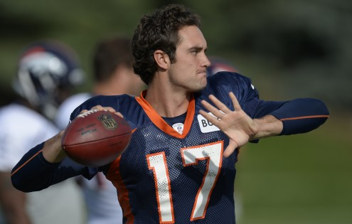
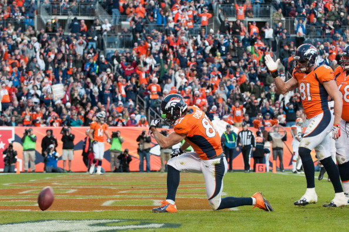
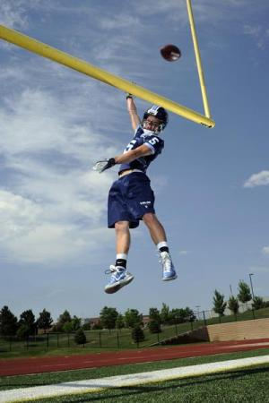
Dan Hawkins
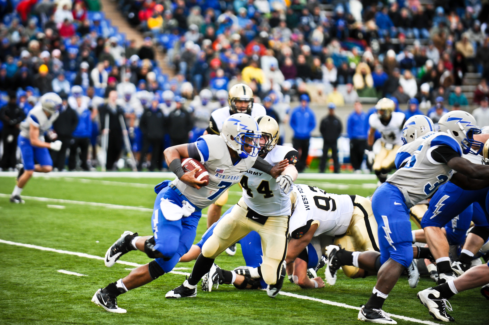
Brock's Journey
Wes Disses Bill
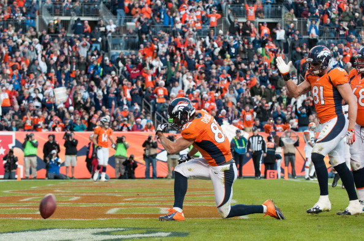
No Fun League
Nuggets Schedule Released
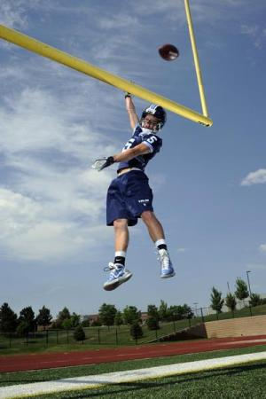
Eddie Mac's Kid a Superstar
Dan Hawkins Coaching Fired
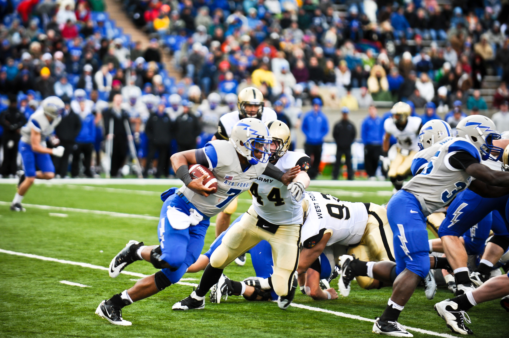